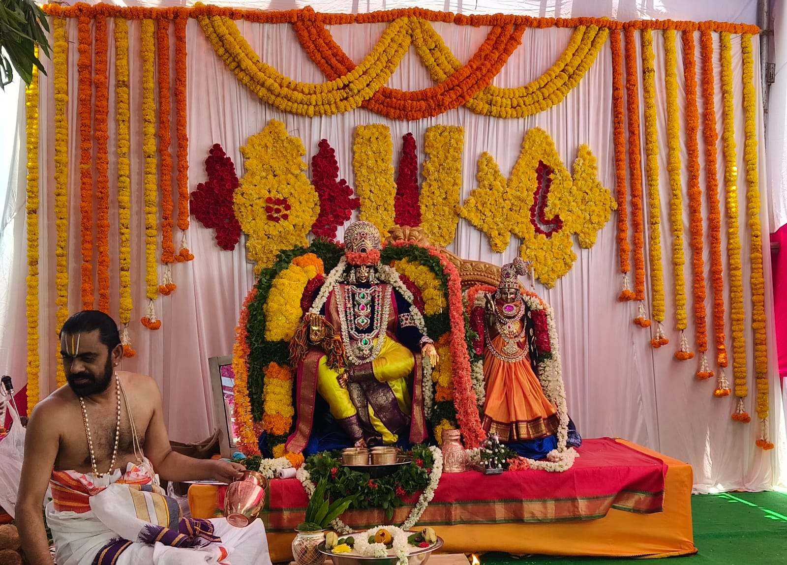

Heritage
Built by the devoted families of Ramnagar, Ongole, our temple follows the South Indian way of worship — from suprabhatam at dawn to sandhya harati at dusk, with rathotsavam and utsavams through the Telugu calendar year.
॥ శ్రీ రామ జయ రామ జయ జయ రామ ॥

Ramnagar · Ongole · Prakasam · Andhra Pradesh
॥ ॐ శ్రీ రామాయ నమః ॥
Andhra South Indian Devasthanam
శ్రీ కోదండ రామస్వామి ఆలయం · రామనగర్, ఒంగోలు
A sacred Andhra temple in the South Indian tradition — suprabhatam, harati, kalyanotsavam, and annadanam at the heart of Ramnagar, Ongole. Come into the divine presence of Sri Rama, Sita Mata, Lakshmana Swamy, and Hanuman Swamy.
Indian Standard Time · for precise muhurtam please consult a panchangam.
Andhra Devasthanam
In the South Indian agama tradition of Andhra Pradesh, our Ramalayam has served the Ramnagar community of Ongole for generations — a home of bhakti, dharma, harati, and annadanam in the Telugu-speaking heartland.
Built by the devoted families of Ramnagar, Ongole, our temple follows the South Indian way of worship — from suprabhatam at dawn to sandhya harati at dusk, with rathotsavam and utsavams through the Telugu calendar year.
The sanctum houses the divine forms of Sri Rama, Mata Sita, Lakshmana Swamy, and Sri Anjaneya Swamy — radiant in eternal grace.
True to Andhra tradition, the temple is a centre of annadanam, bhajana sampradayam, Hari katha, and Veda parayana — nourishing both body and soul of the Ongole community.
“रामो विग्रहवान् धर्मः साधुः सत्यपराक्रमः ।
राजा सर्वस्य लोकस्य देवानामिव वासवः ॥”
“Rama is the embodiment of dharma — noble, truthful, and valiant; the king of all the worlds, like Indra among the gods.”
Temple Hours
The temple is open for darshan every day in the morning and evening. Join us for Vishnu Sahasranamam at 7:00 PM and weekly Hanuman programs on Tuesday and Saturday.
Temple open for suprabhatam, puja, and morning darshan until noon.
Temple reopens in the evening for sandhya darshan, parayanam, and bhajan.
Sri Vishnu Sahasranama stotra parayanam — every evening at 7:00 PM.
Morning Aku Puja for Sri Anjaneya Swamy; evening Hanuman Chalisa recited 11 times.
Aku Puja at 9:00 AM; evening Hanuman Chalisa recited 11 times.
Seasonal Utsavam
From December 16 until Bhogi (January 13/14), Sri Krishna and Godha Devi (Sri Andal) are worshipped at our temple — a sacred tradition we have followed since 2007.
From December 16 until Bhogi, Godha Kalyanam is performed at the temple — the divine wedding of Godha Devi with Sri Krishna.
For 30 days, one pasuram of Sri Andal’s Thiruppavai is recited each day — the sacred outpouring of Ma Andal Thalli (Godha Devi) to Sri Krishna.
Among the Thiruppavai pasurams, Koodarai Vellum Seer (the 27th pasuram) holds special importance at our temple — a beloved hymn of divine bounty and grace.
All devotees are warmly invited to join the Dhanurmasam utsavam with family and receive the blessings of Sri Krishna and Godha Devi.
More details and announcements will be posted here as the season approaches.
Weekly Bhakti Programs
Alongside our weekly programs, devotees may arrange poojas at the temple — Hanuman poojas such as Aku Puja, and offerings devoted to Sri Sita and Sri Rama. This is your temple; please feel free to contact our poojari or committee.
Sri Vishnu Sahasranama stotra parayanam — every evening without fail.
Morning Aku Puja for Sri Anjaneya Swamy; evening Hanuman Chalisa recited 11 times.
Aku Puja at 9:00 AM; evening Hanuman Chalisa recited 11 times.
Dear devotees,
At Sri Kodanda Ramaswami Alayam, every Tuesday and Saturday morning, Aku Puja is offered to Sri Anjaneya Swamy. Every evening at 7:00 PM, Sri Vishnu Sahasranamam is recited. On Tuesday and Saturday evenings, Hanuman Chalisa is recited 11 times with devotion.
Temple hours:
🕕 Morning 6:00 AM – 12:00 PM · Evening 6:00 PM – 9:00 PM
All devotees are warmly invited to visit with their families, participate in these sacred programs, and receive the grace of Sri Sitaramachandra Swamy and Sri Anjaneya Swamy.
Jai Shri Ram 🙏
Yours sincerely,
Sri Kodanda Ramaswami Devasthanam Bhakta Brundam
Ramnagar, Ongole
Sacred Calendar
From Ugadi and Sri Rama Navami to Varalakshmi Vratam and Karthika Deepotsavam — the Andhra festival calendar comes alive with bhajans, processions, and community annadanam.
The grand birthday of Lord Rama. Nine days of pravachanam, kalyanotsavam, and a magnificent rathotsavam through the streets of Ramnagar.
Special abhishekam, sundara kanda parayanam, and distribution of vada-mala prasadam to devotees.
Auspicious pooja for married women, with collective sankalpam in the temple prakaram.
Ten nights of devi puja, Ramayana kathakalakshepam, and the symbolic burning of Ravana on the temple grounds.
The temple is illuminated with thousands of oil lamps; deepa-aradhana every evening of the sacred month.
Devotees pass through the Uttara Dwaram for blessings of moksha, followed by annadanam.
Glimpses
Moments of devotion and divine beauty captured during festivals and daily aratis.
Photos are managed by temple staff. Visit admin to upload new images.
YouTube Channel
Latest temple videos and Shorts from our YouTube channel — updated automatically throughout the day.
Loading latest videos…
Latest Short
Support the Temple
Your contributions sustain daily worship, annadanam, festivals, and the upkeep of this sacred space. If you are interested in donating, please reach out to our temple committee — online donation details will be posted once our bank account is opened.
Sponsor a meal for devotees on a tithi of your choosing.
Support daily worship, flowers, and naivedyam.
Contribute toward temple maintenance and expansion.
Help educate the next generation of priests & scholars.
Sacred Library
A devotional library organized by deity — the complete Vishnu Sahasranama, Hanuman Chalisa, Aditya Hridayam, Sri Rama Raksha Stotram, daily prayers and more. Tap any title to read the full text in beautiful Telugu script with adjustable font size.
Visit Us
Located in peaceful Ramnagar, our doors are open to every devotee. For poojas, donations, or general enquiries, please contact our poojari or committee by phone or email.
Sri Sita Rama Chandra Swamy Devasthanam
F2PX+7XM, Ramnagar 8th Line
Ongole, Prakasam District
Andhra Pradesh — 523001, India
Monday – Sunday
6:00 AM – 12:00 PM & 6:00 PM – 9:00 PM
+91 00000 00000
Temple Office
ramnagarsrikodandaramaswamiala@gmail.com
Poojari & Committee · Pooja & donation enquiries
youtube.com/@SriKodandaRamaswamiAlayam
Watch utsavams, harati & Shorts on our channel